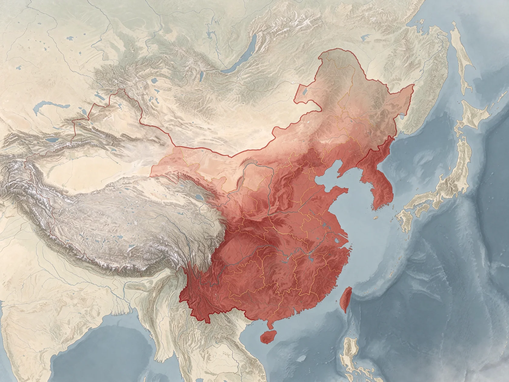

最高统治 · 分职监察
权有所承，责有所归。
建国宪章草案将帝位、魔王之位与主宰监督职分并列，中央各司据此分掌政务。
开国底案规定皇帝与魔王除首任例外不得兼任；正主宰负责监督最高领导人，不掌日常领导权。后世职分历经调整；当今皇帝、魔王幽汐御极七年，州县议事席目前仅在少数州县试办。
建国草案 · 中央诸司职掌
各司其职，循章而行。
建国初制确立中央诸司分掌政务、军务、立法与外交；其后职掌历经增订，形成今日官署沿革的基础。
内政府
由总丞相统理内政。中丞相整合政务意见并辅佐执政；左右护法丞相协助保障法令施行；太尉掌皇室军队、军规及地方军队调动；御史大夫监察朝廷官员并呈报异常。
将军府
掌全国军务，大将军由魔王任命。宪章底本按攘外、应对海外属国求援与守内等职责区分将领；兵部隶属将军府，军令依中央章程执行。
吏部府
以“为国民服务”为职分。草案列有吏、户、礼、工、刑、兵诸部；其中刑部由皇帝直接管理，兵部归将军府统辖，诸部名单并不表示均隶属吏部府。
立法院
帝国法定立法机构，负责制定、修订法律，使国家条文与各司职掌循宪章施行。
外交部
帝国法定外交机构，代表国家办理对外交往。宪章倡行和平友好，不以强力迫使他国，不干涉他国内政，也不无正当理由断交或宣战。
主宰与御史监察
正主宰监督最高统治者，副主宰协助履职并在缺位时承接职责；御史大夫监察朝廷官员。两类监察各有对象与职分，不代替日常行政。
地方政制 · 沿革提要
封国归制，层级分明。
诸侯封国废止后，地方政务纳入统一行政体系。依现存制度记载，可概括为“中枢统辖—省级区划—市县施行”三层；其层级次序为中枢统辖、省区统筹、市县施行。
- 壹全国政务
中枢朝廷
内政府、将军府、吏部府、立法院、外交部等中央机关，依宪章与政典分掌事务。
中央统辖 · 各司分职 - 贰省级区划
开国省区
开国草案以十六个省级行政区为框架；此为底案记载，不作为现行区划名录。旧制中的诸侯封国已撤废，不再作为地方统治层级。
统一区划 · 封国已废 - 叁属地政务
市县与特别市
省区以下设市、县，部分地区另列特别市；地方事务依后续政典及属地章程办理。
市县施行 · 依法循章
中枢职掌 · 关系总览
各司分掌，中枢协同。
朝廷与官署关系
皇帝与魔王承担帝国最高执政职分；主宰负责监督，不介入日常行政。内政府统理民政，将军府掌全国军务，立法院与外交部各守其法定职权，诸司循宪章共同运作。
疆域舆图 · 地方行政
舆图存卷，万里一统。
舆图以东亚为基底，所绘疆域规模约与元代全盛时期相当；图中朱红表示帝国疆域，金线标示省区边界。
开国草案以十六个省级行政区为框架，草案所载省区以下设市县，部分地区另列特别市。原制曾在北原省划出七个相对独立的诸侯国，后已随历次修订废止；现行行政层级以省区与下级地方单位为主。开国宪章草案列明地方长官通常由当地人民选举，特殊情况下由皇帝或魔王依层级任命；这是底案所列原则，并非幽汐御极七年试办的现况，具体施行细则以修订政典为准。

帝国疆域以东亚大陆为基底，规模约当元代全盛时期。开国以十六个省级区划为框架，省区之下设市县；图中以朱红呈现帝国范围，以金线标出省区分界。